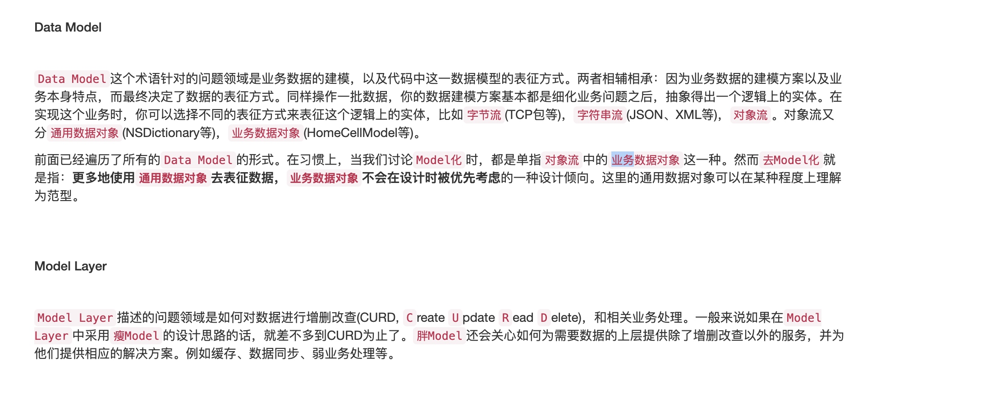

本地持久化
文章看自这里
model和model层的区别，model可以称为dataModel 只是业务数据建模形式的一种

dataCenter协调持久层和业务层，他通过调用持久层的弱业务逻辑，来给业务层提供强业务逻辑数据
Virtual Record就是前面提到的一个既能够被业务层理解，也能够被持久层理解的数据载体。Virtual Record事实上并不是一个对象，它只是一个protocol，这就是它Virtual的原因。一个对象只要实现了Virtual Record，它就可以直接被持久层当作Record进行操作，所以它也是一个Record。连起来就是Virtual Record了。所以，Virtual Record的实现者可以是任何对象，这个对象一般都是业务层对象。
datacenter一般被Controller持有，因此不适合作为单例，datacenter可以根据业务作出分化，每个业务提供一个dataCenter然后在相关controller下去调度
通过dataCenter可以将强业务逻辑和若业务逻辑区分开
总结
在交互方案设计中，需要区别强业务逻辑和弱业务逻辑，把传统的dataModel区分为Table和Record，由DataCenter去实现强业务，Table去实现弱业务。由于DataCenter是强业务相关，所以在实际编码中，业务工程师负责创建DataCenter，并向业务层提供业务友好的方法，然后再在DataCenter中操作Table来完成业务层交付的需求
在具体与业务层交互时，采用Virtual Record的设计思路来设计Record，由具体的业务对象来实现Virtual Record，以它作为DataCenter和业务层之间的数据媒介进行交互。而不是使用传统的数据模型来与业务层做交互。
数据同步方案
单向数据同步
主要针对消息类应用
- 改造的时候添加identifier(操作的唯一标识，而不是数据的唯一标识)，isDirty，isDeleted字段。如果在请求期间依旧允许对数据做操作，那么就要把identifier和primaryKey再放到一个新的表中
- 每次生成数据之后对应生成一个identifier，然后只要是针对数据的操作，就修改一次isDirty或isDeleted，然后发起请求带上identifier和操作指令去告知服务器执行相关的操作。如果是复杂的同步方式，那么每一次修改数据时就新生成一次identifier，然后再发起请求带上相关数据告知服务器
- 服务器根据请求包的identifier等数据执行操作，操作完毕回复给客户端确认
- 收到服务器的确认包之后，根据服务器给到的identifier（有的时候也会有tablename，取决于你的具体实现）找到对应的记录，如果是删除操作，直接把数据删除就好。如果是插入和更新操作，就把isDirty置为NO。如果有额外的表记录了更新操作，直接把identifier对应的这个操作记录删掉就行。
双向数据同步
主要针对笔记、日程类应用
封装操作对象
需要通过封装操作对象,封装的对象中需要有:
- 操作的唯一标识
- 数据的唯一标识
- 操作的类型
- 具体的数据，主要是在Insert和Update的时候会用到
- 操作的依赖标识
- 用户执行这项操作时的时间戳
增加待操作数据表和待同步数据表
拉去待执行列表实际
- 每次要把本地数据丢到服务器去同步之前，都要拉取一次待执行列表，执行完毕之后再上传本地同步数据
- 每次进入相关页面的时候都更新一次，看有没有新的操作
- 对实时性要求比较高的，要么客户端本地起一个线程做轮询，要么服务器通过长链接将待执行操作推送过来
Copyright © 2015 Powered by MWeb, Theme used GitHub CSS.